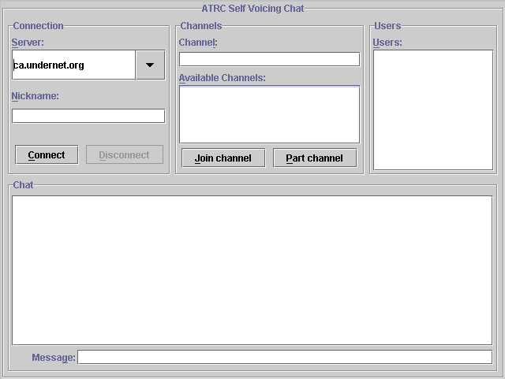
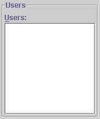
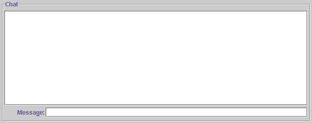

The ATRC Self Voicing Chat is an IRC chat client, that will allow you to connect to any IRC chat server, and join channels, just like other IRC chat client. It is designed as an example of using the SVK to voice a chat, and as such, it does not fully implement the IRC protocol. There are some typical IRC functions that are not available:
At any time, press F4 to hear a description of the current status of the chat, including:
Using the chat is very simple. The window is divided into four sections, which are described below. The four sections are:

The Connection section provides a drop-down list of IRC servers, or you can type in an address yourself. There is a text entry field for your nickname, and Connect/Disconnect buttons.
A drop-down list of some available servers. You can also type in the name of a server
A text field to allow you to enter a nickname. You must have a nickname to connect to a server
This button will connect you to the selected server
This button will disconnect you from the current server
The Rooms section contains a list of channels available on the current server. This list is filled upon connection to a server. To join a room, select from the list, or type the channel name into the text entry field, and select Join. To part the current channel, select Part.
A text field to allow you to enter a channel name.
A list of channels currently available on this server. You can also type in the name of a channel (preceded by '#')
This button will add you to the specified channel
This button will remove you from the current channel
The Users section contains a list of user nicknames currently part of the channel. This list is updated as user join and part the channel.
A list of users currently on the the current channel. This list is updated as users join and part the channel.
The Chat section contains a window which displays the actual chat, and a text entry field for you to type your messages. To send a message to the chat, simply type it in the entry field and press Enter.
A text field allowing you to type in a message to send to the chat.

The Chat uses the IBM Self Voicing Kit to 'voice' itself. This means that voice output will describe where the current focus is, and what is happening in the chat window. Specifically:
The Chat interface is designed in keeping with accessible user interface design principles. This means that all fields can be focussed using the Tab key or through their keyboard 'hot-key', and all buttons, etc. have 'hot-keys'.
[Home] [Requirements and Setup] [How to use the chat] [Try the Chat] [Technical Information]
Page modified: July 27, 1999